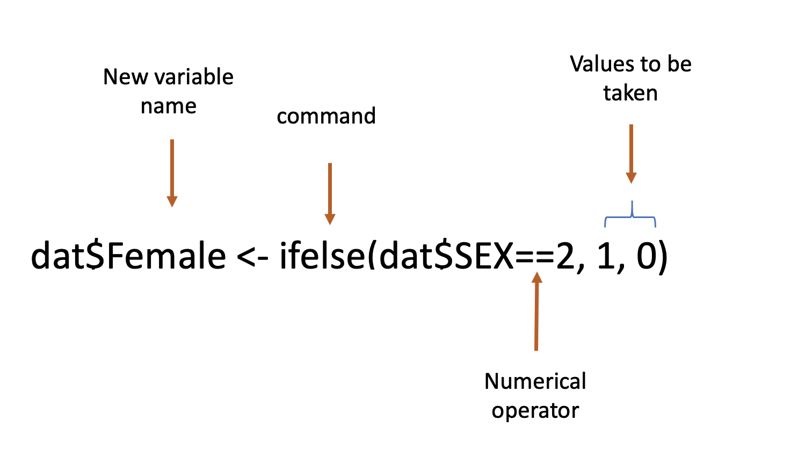

Chapter 4 Aula 3
No dia a dia de quem trabalha com dados, infelizmente, é muito comum se deparar com dados formatados de um jeito bastante complicado de se manipular. Isso acontece pois a forma de se trabalhar com dados é muito diferente da forma de se apresentar ou visualizar dados. Resumindo: ler dados requer uma estrutura bem diferente de manipular dados. Limpeza de dados também é considerada parte da manipulação de dados.
4.1 Criando variáveis
Esta seção se concentra na criação de novas variáveis para sua análise como parte de uma estratégia geral de limpeza de seus dados. Muitas vezes, os dados chegarão a nós codificados de uma certa maneira, mas podemos desejar transformá-los para torná-los mais fáceis de se trabalhar.
Nossas análises frequentemente se concentram em mudanças lineares em uma variável dada, mas os dados geralmente não são codificados de forma a representar esses tipos de diferenças.
4.1.2 Usando o comando ifelse
O comando ifelse é lido como uma frase.

Digamos que queremos criar uma nova variável que nos indique se determinado indivíduo na nossa base de dados é um trabalhador autônomo ou não.
## [1] "sim" "não" "sim" "não" "não" "não"Maior e menor que
Vamos utilizar a variável idade para mostrar a utilidade dos operadores matemáticos “maior que” e “menor que”. Digamos que queremos criar uma nova variável qualitativa que mostre quem são os idosos na nossa base de dados.
Pedimos ao R para selecionar todas observações igual ou maiores que 60 da variável idosos. Se essa condição for preenchida, queremos que na nova variável tenhamos uma categoria “Idosos”.
Após realizar o comando podemos abrir o dataframe para verificar se a nova coluna foi corretamente criada.
## [1] "Não Idosos" "Não Idosos" "Não Idosos" "Não Idosos" "Não Idosos" "Não Idosos"my_tbl <- tibble::tribble(
~Col_1, ~Col_2,
NA, NA,
NA, NA,
NA, NA,
NA, NA,
)
require(knitr)
kable(my_tbl, digits = 3, row.names = FALSE, align = "c",
caption = NULL)| Col_1 | Col_2 |
|---|---|
| NA | NA |
| NA | NA |
| NA | NA |
| NA | NA |
Vamos complexificar um pouco mais. Digamos que agora nós queremos 3 categorias. Todos indivíduos com menos 40 anos serão classificados como jovem adultos. De 40 a 59 anos, como adultos e mais de 60 anos, como idosos.
O operador & é utilizado para indicar que temos que obedecer mais de uma condição ao mesmo tempo.
4.2 Filtrar
A filtragem de variáveis pode ser feita através do comando subset.
Repare que o novo dataframe dadosf contém 4314 observações, pois abarca apenas os indivíduos mais jovens que 60 anos.
## X status tempo_empresa moradia
## Min. : 1 Length:4314 Min. : 0.000 Length:4314
## 1st Qu.:1115 Class :character 1st Qu.: 2.000 Class :character
## Median :2230 Mode :character Median : 5.000 Mode :character
## Mean :2229 Mean : 7.743
## 3rd Qu.:3336 3rd Qu.:12.000
## Max. :4454 Max. :43.000
##
## tempo_emprestimo idade estado_civil registros
## Min. : 6.00 Min. :18.00 Length:4314 Length:4314
## 1st Qu.:36.00 1st Qu.:28.00 Class :character Class :character
## Median :48.00 Median :35.00 Mode :character Mode :character
## Mean :46.57 Mean :36.26
## 3rd Qu.:60.00 3rd Qu.:44.00
## Max. :72.00 Max. :59.00
##
## trabalho despesas renda ativos
## Length:4314 Min. : 35.00 Min. : 8.0 Min. : 0
## Class :character 1st Qu.: 35.00 1st Qu.: 90.0 1st Qu.: 0
## Mode :character Median : 51.00 Median :125.0 Median : 3000
## Mean : 55.72 Mean :141.5 Mean : 5207
## 3rd Qu.: 74.00 3rd Qu.:170.0 3rd Qu.: 6000
## Max. :180.00 Max. :959.0 Max. :300000
## NA's :374 NA's :46
## dividas valor_emprestimo preco_do_bem autonomo
## Min. : 0.0 Min. : 100 Min. : 105 Length:4314
## 1st Qu.: 0.0 1st Qu.: 700 1st Qu.: 1125 Class :character
## Median : 0.0 Median :1000 Median : 1410 Mode :character
## Mean : 346.9 Mean :1043 Mean : 1468
## 3rd Qu.: 0.0 3rd Qu.:1300 3rd Qu.: 1698
## Max. :30000.0 Max. :5000 Max. :11140
## NA's :17
## idadeQ
## Length:4314
## Class :character
## Mode :character
##
##
##
## O comando subset permite selecionar apenas as colunas desejadas
## moradia status idade
## 1 alugada bom 30
## 2 alugada bom 58
## 3 própria ruim 46
## 4 alugada bom 24
## 5 alugada bom 26
## 6 própria bom 36Digamos que queremos montar uma tabela apenas com indivíduos cuja moradia é própria ou alugada.
## X status tempo_empresa moradia
## Min. : 1 Length:973 Min. : 0.000 Length:973
## 1st Qu.:1070 Class :character 1st Qu.: 1.000 Class :character
## Median :2100 Mode :character Median : 4.000 Mode :character
## Mean :2166 Mean : 6.881
## 3rd Qu.:3293 3rd Qu.:10.000
## Max. :4453 Max. :40.000
##
## tempo_emprestimo idade estado_civil registros
## Min. : 6.00 Min. :18.00 Length:973 Length:973
## 1st Qu.:36.00 1st Qu.:29.00 Class :character Class :character
## Median :48.00 Median :36.00 Mode :character Mode :character
## Mean :47.55 Mean :36.71
## 3rd Qu.:60.00 3rd Qu.:43.00
## Max. :60.00 Max. :68.00
##
## trabalho despesas renda ativos
## Length:973 Min. : 35.00 Min. : 22.0 Min. : 0
## Class :character 1st Qu.: 49.00 1st Qu.: 93.0 1st Qu.: 0
## Mode :character Median : 60.00 Median :125.0 Median : 0
## Mean : 65.45 Mean :140.7 Mean : 1477
## 3rd Qu.: 78.00 3rd Qu.:170.0 3rd Qu.: 0
## Max. :173.00 Max. :535.0 Max. :100000
## NA's :86 NA's :4
## dividas valor_emprestimo preco_do_bem autonomo
## Min. : 0.00 Min. : 100 Min. : 125 Length:973
## 1st Qu.: 0.00 1st Qu.: 700 1st Qu.: 1044 Class :character
## Median : 0.00 Median :1000 Median : 1350 Mode :character
## Mean : 97.94 Mean :1027 Mean : 1386
## 3rd Qu.: 0.00 3rd Qu.:1300 3rd Qu.: 1636
## Max. :21400.00 Max. :3800 Max. :11140
## NA's :2
## idadeQ
## Length:973
## Class :character
## Mode :character
##
##
##
## 4.3 Remover dados
Using the select() verb, we can answer interesting questions about our dataset by focusing in on related groups of verbs. The colon (:) is useful for getting many columns at a time.
4.4 Renomear variáveis
Às vezes será necessário renomear as variáveis no nosso dataframe.
Carregamos o pacote dplyr
## X status tempo_empresa moradia tempo_emprestimo idade teste registros
## 1 1 bom 9 alugada 60 30 casada(o) não
## 2 2 bom 17 alugada 60 58 viúva(o) não
## 3 3 ruim 10 própria 36 46 casada(o) sim
## 4 4 bom 0 alugada 60 24 solteira(o) não
## 5 5 bom 0 alugada 36 26 solteira(o) não
## 6 6 bom 1 própria 60 36 casada(o) não
## trabalho despesas renda ativos dividas valor_emprestimo preco_do_bem autonomo
## 1 autônomo 73 129 0 0 800 846 sim
## 2 fixo 48 131 0 0 1000 1658 não
## 3 autônomo 90 200 3000 0 2000 2985 sim
## 4 fixo 63 182 2500 0 900 1325 não
## 5 fixo 46 107 0 0 310 910 não
## 6 fixo 75 214 3500 0 650 1645 não
## idadeQ
## 1 Jovem adultos
## 2 Adultos
## 3 Adultos
## 4 Jovem adultos
## 5 Jovem adultos
## 6 Jovem adultos